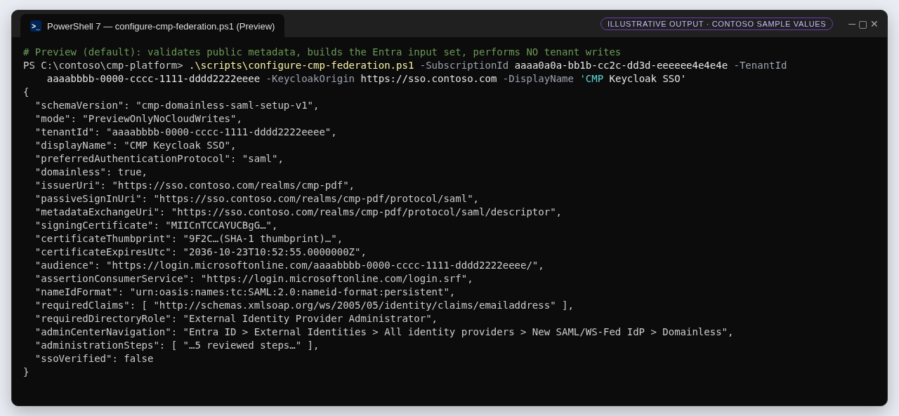
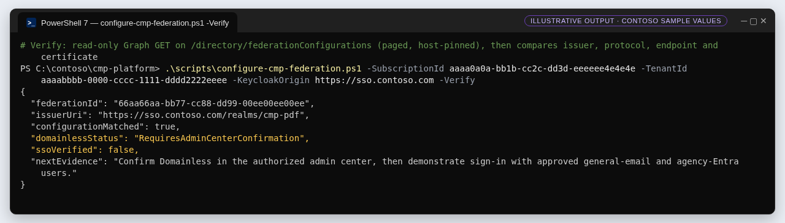

G3 · Export and validate the Keycloak SAML metadata
Turn Keycloak's public metadata into reviewed Entra inputs with strict XML and certificate checks, then verify the saved Entra record read-only.
▶ Watch this in the video walkthrough: Step 3 · Check the SAML metadata (starts at 4:20)
Outcome#
A reviewed, machine-checked set of values for the Entra federation form — Issuer URI, passive sign-in endpoint, metadata URL, signing certificate, audience, ACS, NameID format and required claim — produced without writing anything to the tenant.
Run the preview#
.\scripts\configure-cmp-federation.ps1 -SubscriptionId aaaa0a0a-bb1b-cc2c-dd3d-eeeeee4e4e4e -TenantId aaaabbbb-0000-cccc-1111-dddd2222eeee `
-KeycloakOrigin https://sso.contoso.com -DisplayName 'CMP Keycloak SSO' -OutputPath .\out\federation-setup.json
-MetadataFile the script downloads metadata itself: HTTPS only, 15-second timeout, 1 MiB cap, and redirects refused.

New-CmpSamlFederationSetup (certificate and thumbprint truncated).What is validated#
| Check | Why it matters |
|---|---|
Exact HTTPS origin; non-master realm | Prevents pointing Entra at the administrative realm or an unexpected host. |
| ≤ 1 MiB; DTD processing prohibited; no XML resolver | Blocks XXE and entity-expansion attacks on the metadata parser. |
entityID equals {origin}/realms/{realm} | Issuer mismatch is the most common federation break. |
| Exactly one IDPSSODescriptor supporting SAML 2.0 | Ambiguous metadata is refused, not guessed. |
HTTP-Redirect SSO endpoint equals {issuer}/protocol/saml | This is the passive sign-in endpoint Entra will use. |
| Exactly one signing certificate; RSA ≥ 2048; valid now and > 7 days left | Forces an explicit review when a rollover is in progress (two certificates). |
function New-CmpSamlFederationSetup {
param(
[Parameter(Mandatory)][string]$XmlText,
[Parameter(Mandatory)][string]$KeycloakOrigin,
[Parameter(Mandatory)][guid]$TenantId,
[string]$Realm = 'cmp-pdf',
[string]$DisplayName = 'CMP Keycloak PDF SSO'
)
Assert-ExactOrigin $KeycloakOrigin
if ($TenantId -eq [guid]::Empty -or $Realm -cnotmatch '^[a-zA-Z0-9_-]{1,80}$' -or $Realm -ceq 'master') {
throw 'A nonempty resource tenant ID and a non-administrative realm are required.'
}
if ($DisplayName.Length -lt 3 -or $DisplayName.Length -gt 120 -or $DisplayName -match '[\x00-\x1f\x7f]') {
throw 'DisplayName must contain 3-120 printable characters.'
}
if ([Text.Encoding]::UTF8.GetByteCount($XmlText) -gt 1048576) { throw 'SAML metadata exceeds the 1 MiB limit.' }
$settings = [Xml.XmlReaderSettings]::new()
$settings.DtdProcessing = [Xml.DtdProcessing]::Prohibit
$settings.XmlResolver = $null
$settings.MaxCharactersInDocument = 1048576
$stringReader = [IO.StringReader]::new($XmlText)
$reader = [Xml.XmlReader]::Create($stringReader, $settings)
$document = [Xml.XmlDocument]::new()
$document.XmlResolver = $null
try { $document.Load($reader) }
finally { $reader.Dispose(); $stringReader.Dispose() }
$namespaces = [Xml.XmlNamespaceManager]::new($document.NameTable)
$namespaces.AddNamespace('md', 'urn:oasis:names:tc:SAML:2.0:metadata')
$namespaces.AddNamespace('ds', 'http://www.w3.org/2000/09/xmldsig#')
$entity = $document.SelectSingleNode('/md:EntityDescriptor', $namespaces)
$issuer = "$KeycloakOrigin/realms/$Realm"
if (-not $entity -or $entity.GetAttribute('entityID') -cne $issuer) {
throw 'SAML metadata issuer does not match the exact configured Keycloak realm.'
}
$idps = $entity.SelectNodes('md:IDPSSODescriptor', $namespaces)
if ($idps.Count -ne 1 -or 'urn:oasis:names:tc:SAML:2.0:protocol' -notin
$idps[0].GetAttribute('protocolSupportEnumeration').Split(' ', [StringSplitOptions]::RemoveEmptyEntries)) {
throw 'Exactly one SAML 2.0 identity-provider descriptor is required.'
}
$endpoints = $idps[0].SelectNodes('md:SingleSignOnService[@Binding="urn:oasis:names:tc:SAML:2.0:bindings:HTTP-Redirect"]', $namespaces)
if ($endpoints.Count -ne 1 -or $endpoints[0].GetAttribute('Location') -cne "$issuer/protocol/saml") {
throw 'The SAML redirect endpoint must be the exact configured Keycloak realm endpoint.'
}
$certificates = $idps[0].SelectNodes('md:KeyDescriptor[@use="signing" or not(@use)]/ds:KeyInfo/ds:X509Data/ds:X509Certificate', $namespaces)
if ($certificates.Count -ne 1) { throw 'Exactly one current public SAML signing certificate is required; review rollover metadata explicitly.' }
$certificate = [Security.Cryptography.X509Certificates.X509Certificate2]::new(
[Convert]::FromBase64String(($certificates[0].InnerText -replace '\s', '')))
$rsa = $null
try {
$rsa = [Security.Cryptography.X509Certificates.RSACertificateExtensions]::GetRSAPublicKey($certificate)
if (-not $rsa -or $rsa.KeySize -lt 2048 -or
$certificate.NotBefore.ToUniversalTime() -gt [DateTime]::UtcNow -or
$certificate.NotAfter.ToUniversalTime() -le [DateTime]::UtcNow.AddDays(7)) {
throw 'The SAML signing certificate must have an RSA key of at least 2048 bits and more than seven days of validity.'
}
return [pscustomobject][ordered]@{
schemaVersion = 'cmp-domainless-saml-setup-v1'
mode = 'PreviewOnlyNoCloudWrites'
tenantId = $TenantId.ToString()
displayName = $DisplayName
preferredAuthenticationProtocol = 'saml'
domainless = $true
issuerUri = $issuer
passiveSignInUri = "$issuer/protocol/saml"
metadataExchangeUri = "$issuer/protocol/saml/descriptor"
signingCertificate = [Convert]::ToBase64String($certificate.RawData)
certificateThumbprint = $certificate.Thumbprint
certificateExpiresUtc = $certificate.NotAfter.ToUniversalTime().ToString('o')
audience = "https://login.microsoftonline.com/$TenantId/"
assertionConsumerService = 'https://login.microsoftonline.com/login.srf'
nameIdFormat = 'urn:oasis:names:tc:SAML:2.0:nameid-format:persistent'
requiredClaims = @('http://schemas.xmlsoap.org/ws/2005/05/identity/claims/emailaddress')
requiredDirectoryRole = 'External Identity Provider Administrator'
requiredDelegatedPermission = 'IdentityProvider.ReadWrite.All'
adminCenterUrl = 'https://entra.microsoft.com/'
adminCenterNavigation = 'Entra ID > External Identities > All identity providers > New SAML/WS-Fed IdP > Domainless'
administrationSteps = @(
'An authorized administrator must first inspect the tenant for an existing domainless/wildcard identity provider. Only one is supported. Do not replace it.'
'Create a new external SAML identity provider using these public metadata fields and select Domainless. Do not convert any native Entra domain authentication.'
'Provision only approved B2B test guests. During redemption, use a domain_hint equal to issuerUri as documented by Microsoft.'
'Preserve existing guest redemption methods and cross-tenant policies unless a separate change is approved.'
'Demonstrate real CMP login and subsequent Azure Portal access. Record consent and MFA prompts; metadata configuration alone is not SSO evidence.'
)
documentation = 'https://learn.microsoft.com/entra/external-id/direct-federation#domainless-saml-idp-federation'
graphApiBoundary = 'The documented v1.0 resource does not specify a domainless request property. This tool does not invent a wildcard Graph payload or perform tenant writes.'
ssoVerified = $false
}
} finally {
if ($rsa) { $rsa.Dispose() }
$certificate.Dispose()
}
}
Read-only verification after G4#
With -Verify, the script signs in (pinned account and tenant), lists the tenant's SAML/WS-Fed federations through Microsoft Graph — the list operation needs Domain.Read.All and the External Identity Provider Administrator role (Learn) — follows @odata.nextLink only to the same Graph host and path, and compares issuer, protocol, passive endpoint and certificate. It never creates or updates anything.


function Confirm-CmpSamlFederationRecord {
param([Parameter(Mandatory)]$Setup, [object[]]$Records = @())
$matches = @($Records | Where-Object { $_.issuerUri -ceq $Setup.issuerUri })
if ($matches.Count -ne 1) { throw 'The expected issuer must match exactly one existing external federation. No creation or overwrite was attempted.' }
$record = $matches[0]
if ($record.preferredAuthenticationProtocol -cne 'saml' -or
$record.passiveSignInUri -cne $Setup.passiveSignInUri -or
[Convert]::ToBase64String([Convert]::FromBase64String($record.signingCertificate)) -cne $Setup.signingCertificate) {
throw 'Existing federation protocol, endpoint or certificate differs from the reviewed public metadata. No update was attempted.'
}
return [pscustomobject]@{
federationId = $record.id
issuerUri = $record.issuerUri
configurationMatched = $true
domainlessStatus = 'RequiresAdminCenterConfirmation'
ssoVerified = $false
nextEvidence = 'Confirm Domainless in the authorized admin center, then demonstrate sign-in with approved general-email and agency-Entra users.'
}
}
Full script: configure-cmp-federation.ps1
#requires -Version 7.0
<#
.SYNOPSIS
Exports reviewed public Keycloak SAML metadata for Entra domainless B2B federation.
.DESCRIPTION
Preview is the default and performs no Azure calls when MetadataFile is supplied.
Verify performs read-only Graph requests. Domainless creation uses the documented
Entra admin-center workflow; no undocumented wildcard Graph payload is generated.
This script never converts a native domain, changes MFA policies, resets guests,
sends invitations, assigns roles, or claims an end-to-end SSO demonstration.
#>
[CmdletBinding()]
param(
[Parameter(Mandatory)][guid]$SubscriptionId,
[Parameter(Mandatory)][guid]$TenantId,
[Parameter(Mandatory)][string]$KeycloakOrigin,
[string]$Realm = 'cmp-pdf',
[string]$DisplayName = 'CMP Keycloak PDF SSO',
[string]$ExpectedAccount = 'admin@contoso.com',
[string]$MetadataFile,
[string]$OutputPath,
[switch]$Verify
)
. (Join-Path $PSScriptRoot 'sso-federation-common.ps1')
if ($SubscriptionId -eq [guid]::Empty) { throw 'SubscriptionId must be nonempty.' }
Assert-ExactOrigin $KeycloakOrigin
if ($Realm -cnotmatch '^[a-zA-Z0-9_-]{1,80}$' -or $Realm -ceq 'master') { throw 'A non-administrative Keycloak realm is required.' }
if ($MetadataFile) {
$file = Get-Item -LiteralPath $MetadataFile
if ($file.PSIsContainer -or $file.Length -gt 1048576) { throw 'MetadataFile must be a public XML file no larger than 1 MiB.' }
$xml = [IO.File]::ReadAllText($file.FullName)
} else {
$handler = [Net.Http.HttpClientHandler]::new()
$handler.AllowAutoRedirect = $false
$client = [Net.Http.HttpClient]::new($handler)
$client.Timeout = [TimeSpan]::FromSeconds(15)
$client.MaxResponseContentBufferSize = 1048576
$response = $null
try {
$response = $client.GetAsync("$KeycloakOrigin/realms/$Realm/protocol/saml/descriptor").GetAwaiter().GetResult()
if ([int]$response.StatusCode -ne 200) { throw "Public SAML metadata returned HTTP $([int]$response.StatusCode); redirects are refused." }
$xml = $response.Content.ReadAsStringAsync().GetAwaiter().GetResult()
} finally {
if ($response) { $response.Dispose() }
$client.Dispose()
}
}
$setup = New-CmpSamlFederationSetup -XmlText $xml -KeycloakOrigin $KeycloakOrigin `
-TenantId $TenantId -Realm $Realm -DisplayName $DisplayName
$result = $setup
if ($Verify) {
Initialize-CmpContext $SubscriptionId.ToString() $TenantId.ToString() $ExpectedAccount
$uri = 'https://graph.microsoft.com/v1.0/directory/federationConfigurations/microsoft.graph.samlOrWsFedExternalDomainFederation'
$records = [Collections.Generic.List[object]]::new()
for ($page = 0; $page -lt 20; $page++) {
$response = Invoke-CmpRest -Uri $uri -Resource 'https://graph.microsoft.com/'
foreach ($record in $response.value) { $records.Add($record) }
$next = $response.PSObject.Properties['@odata.nextLink']
if (-not $next -or -not $next.Value) { break }
$nextUri = [uri]$next.Value
if ($nextUri.Scheme -cne 'https' -or $nextUri.Host -cne 'graph.microsoft.com' -or
$nextUri.UserInfo -or $nextUri.AbsolutePath -cne '/v1.0/directory/federationConfigurations/microsoft.graph.samlOrWsFedExternalDomainFederation') {
throw 'Untrusted federation pagination URL refused.'
}
if ($page -eq 19) { throw 'Federation pagination exceeded the safety limit.' }
$uri = $nextUri.AbsoluteUri
}
$result = Confirm-CmpSamlFederationRecord -Setup $setup -Records $records.ToArray()
}
$json = $result | ConvertTo-Json -Depth 8
if ($OutputPath) {
$destination = [IO.Path]::GetFullPath($OutputPath)
if (Test-Path -LiteralPath $destination) { throw 'OutputPath already exists; preserve the previous reviewed configuration and choose a new path.' }
$null = [IO.Directory]::CreateDirectory([IO.Path]::GetDirectoryName($destination))
[IO.File]::WriteAllText($destination, $json, [Text.UTF8Encoding]::new($false))
}
Write-Output $json
The setup object records IdentityProvider.ReadWrite.All as the delegated permission for administration. Microsoft Learn documents Domain.Read.All for listing; confirm the least-privileged permission on the Create/Update reference pages before you automate any write.